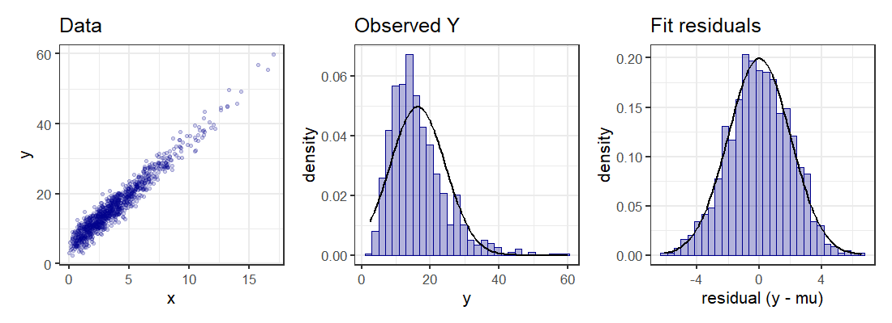
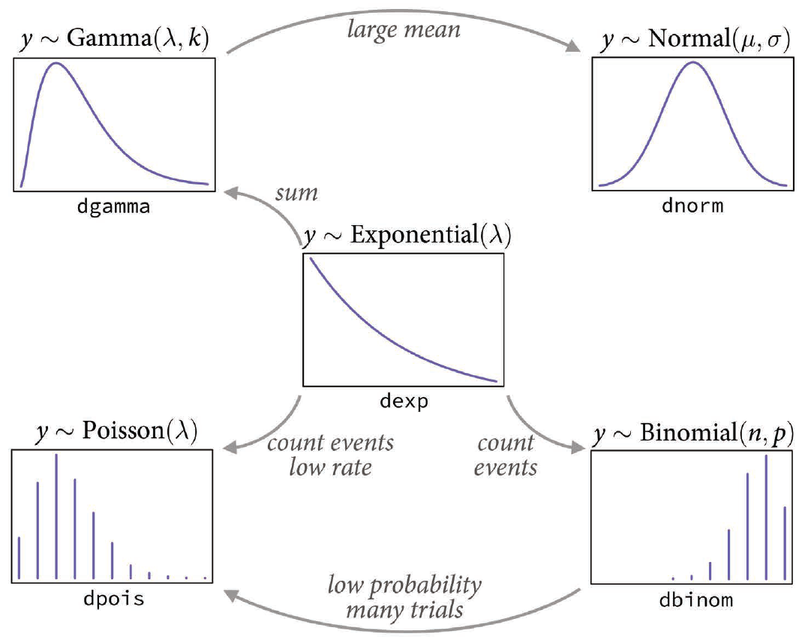
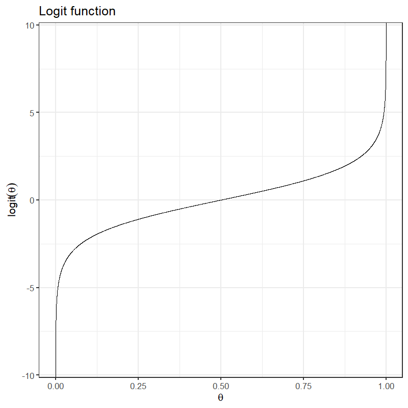
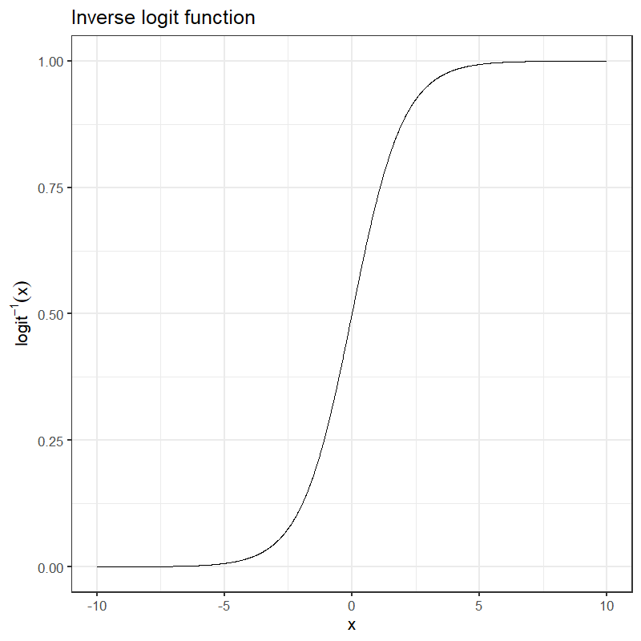
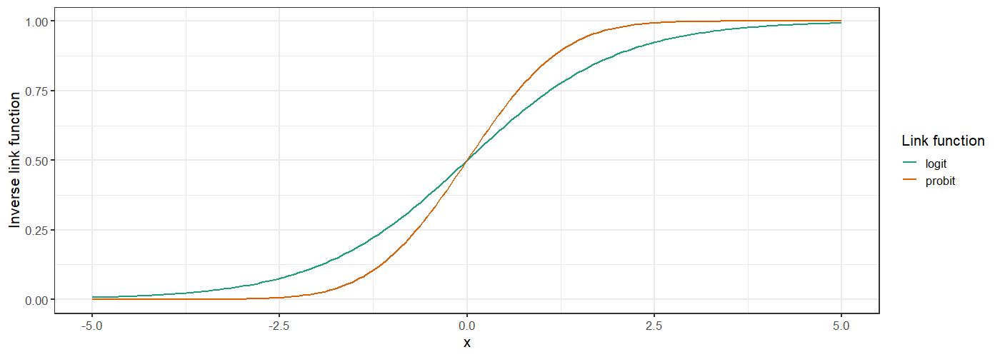

a <- 5
b <- 3
sigma <- 2
N <- 1000
d <- tibble(x = rgamma(N, shape = 2, scale = 2),
mu = a + b * x,
y = rnorm(N, mu, sigma),
res = y - mu)
ds <- summarize(d, ymin = min(y), ymax = max(y),
ymean = mean(y), ysd = sd(y),
rmin = min(res), rmax = max(res))
ref_norm <- tibble(y = seq(ds$ymin, ds$ymax, length.out = 100),
y_dens = dnorm(y, mean = ds$ymean, sd = ds$ysd),
res = seq(ds$rmin, ds$rmax, length.out = 100),
res_dens = dnorm(res, mean = 0, sd = sigma))
library(patchwork)
p1 <- ggplot(d, aes(x = x, y = y)) +
geom_point(color = "darkblue", alpha = 0.2) +
labs(title = "Data")
p2 <- ggplot(d, aes(x = y)) +
geom_histogram(aes(y = after_stat(density)), bins = 30,
color = "darkblue", fill = alpha("darkblue", 0.3)) +
geom_line(data = ref_norm, mapping = aes(x = y, y = y_dens), color = "black",
size = 1) +
labs(title = "Observed Y")
p3 <- ggplot(d, aes(x = res)) +
geom_histogram(aes(y = after_stat(density)), bins = 30,
color = "darkblue", fill = alpha("darkblue", 0.3)) +
geom_line(data = ref_norm, mapping = aes(x = res, y = res_dens), color = "black",
size = 1) +
labs(x = "residual (y - mu)", title = "Fit residuals")
p1 | p2 | p3dexp(t, rate = r) \(= r \exp(-rt) = Np \exp(-Npt)\)
dgamma(t, rate = r, shape = k)
dgamma(t, rate = r, shape = 1) is the same as
dexp(t, rate = t).



True model:
\[ \begin{align} Y &\sim \text{Bernoulli}(p) \\ \text{logit}(p) &= \alpha + \beta_x X + \beta_z Z \end{align} \]
Suppose we leave \(Z\) out \[ \begin{align} Y &\sim \text{Bernoulli}(p) \\ \text{logit}(p) &= \alpha + \beta_x X \end{align} \]
With ordinary linear regression, this just increases the scatter around the mean
With a logit model, there will be data where \(X\) is small, but \(Y = 1\)